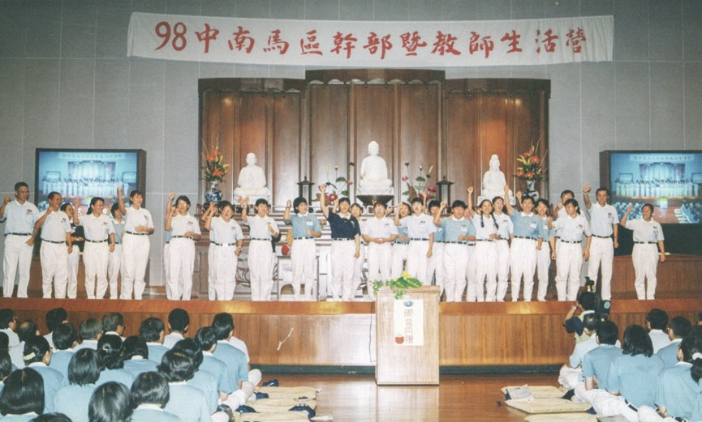
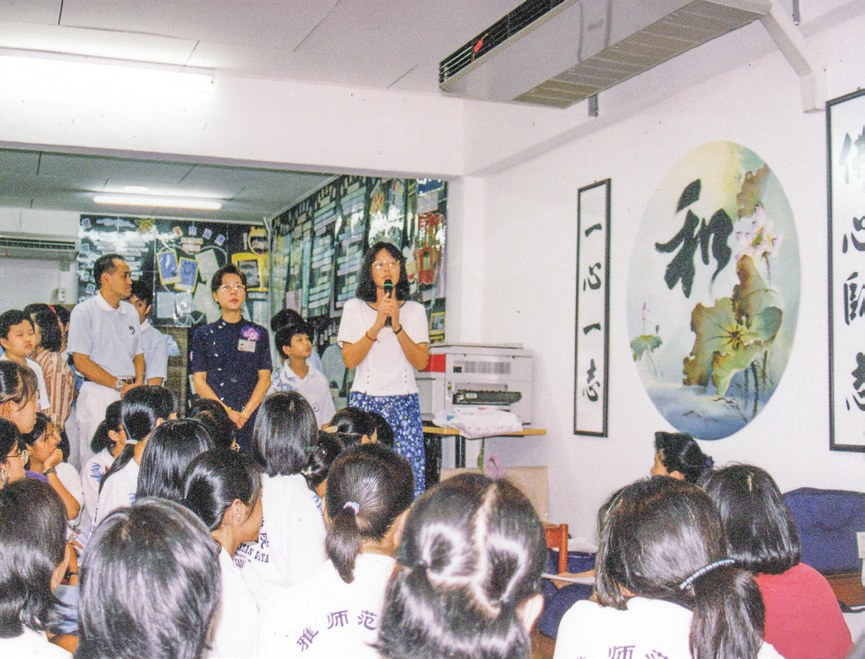
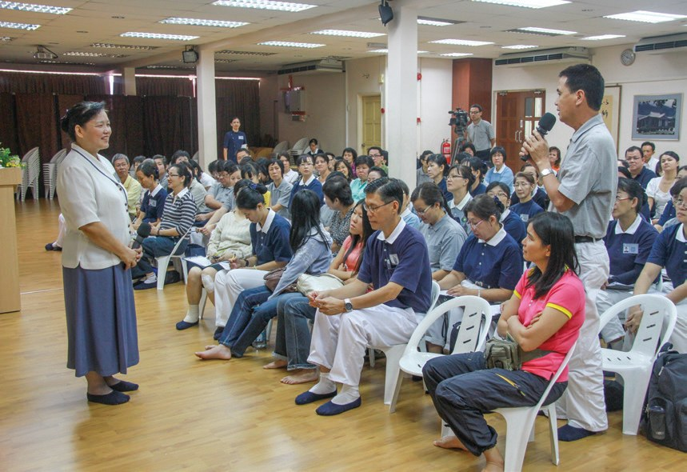
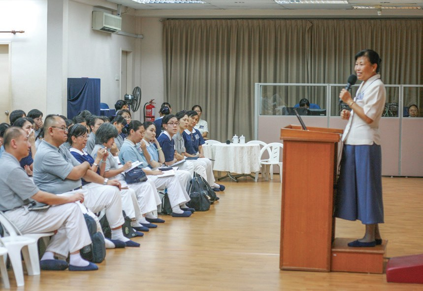
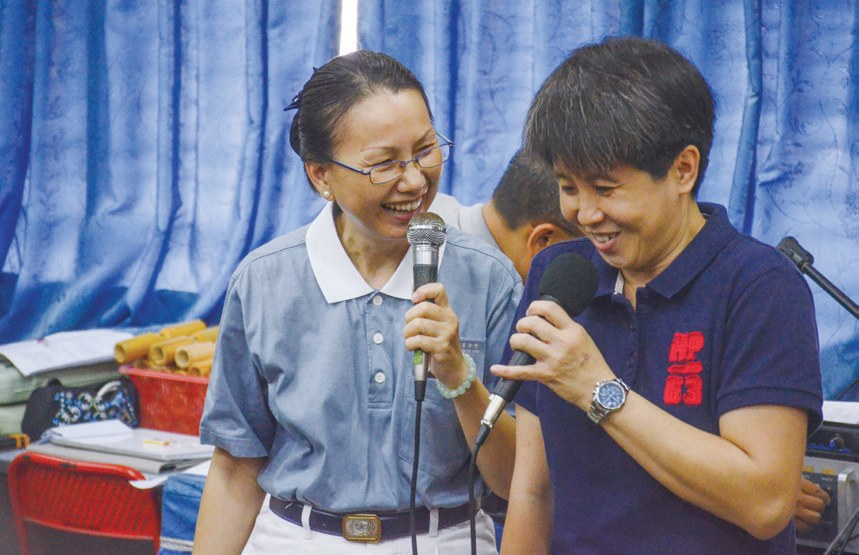
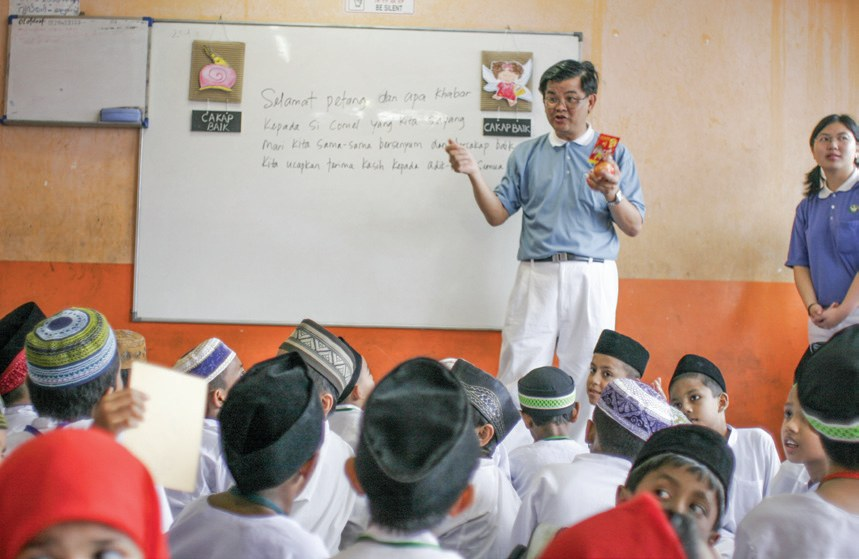

慧命傳承引航師
一句好話，怎樣走進校園？

先別急著下結論，讀完再說說你的想法～
這一篇講雪隆教聯會：一群老師把靜思語帶進課室。一開始被誤會是傳教，只好改名叫「好話一句」。
最後是兩位老師的故事：一位曾經嚴厲處罰學生，一位曾經用藤鞭。
下面是原書的節錄，紅色底線是我們替你標出的轉折點。
讀之前：你覺得一位老師最難改變的是什麼？
從馬六甲到雪隆
一場講座，感動了一群老師。閱讀引導
慈悲喜捨清淨愛，教師宏願育英才
上人期勉・p.393願老師能以智慧追求善法，落實靜思語教學，以清淨的愛培養孩子的品德，肩負教育志業的使命。

還要培養品德。
馬六甲多位教師聆聽講座後，化感動為行動，同年9月2日成立了馬六甲慈濟教聯會。
邀請馬六甲教聯會教師來分享靜思語教學的心得，受到吉隆坡許多華小、華中教師參與講座，深受感動、收穫滿滿。
同年7月7日，吉隆坡慈濟教聯會正式成立。
帶動了吉隆坡的老師！

活動結束後，有30位教師響應，發願籌組古晉教聯會。1999年1月20日，古晉教聯會正式成立。

也成立教聯會了！
當年是馬六甲老師來雪隆分享；2017年，換雪隆教育團隊到馬六甲分享。
改名「好話一句」
一句「口吐蓮花」，家長到學校抗議。閱讀引導

由於馬來西亞政府禁止宗教團體進入校園傳教，在靜思語教學被誤認為是傳教的情況下，一開始的推廣並不順利。
甚至有次，一位教師因為一句「口說好話如口吐蓮花」，被家長認為蓮花二字代表佛教，因此認定這句話是在傳教，而到學校抗議。

也會被抗議？
於是，後來不得不將「靜思語教學」，改成「好話一句教學」。
「我始終認為真金不怕洪爐火，好的東西終究會被接納。」
李潔雲表示・p.396
好話還是好話。
「我發現靜思語真正成功的地方，是來自慈濟人無所求地以行動關懷學生的真誠心……」
中華獨中校長陳建誠表示・p.396–397而且靜思語教學是立身行事的準則，是啟發學生的愛心，不是宗教教義的闡揚，並不與其他宗教信仰牴觸……
猜一猜閱讀引導
為了不被誤會是傳教，「靜思語教學」後來改成了什麼名字？
老師一起備課
教材不夠，三地老師一起編教案。閱讀引導
2006年吉隆坡教聯會成立種子老師成長教室，安排每週共修，讓有心從事靜思語教學的教師，能共同凝聚心力……

雖然靜思語教學推廣逐漸有了起色，但卻也面臨教育資源不足的問題。
教材卻不夠……

馬六甲、新加坡、雪隆三地慈濟志工合作，正式成立新馬菩提種子編輯委員會，編輯新馬地區的菩提種子教案。
一起編教案！
- 1996年吉隆坡教聯會成立p.394
- 逾3,900人次接引教師參與（截至2022年）p.399
兩位老師
一位曾經嚴厲處罰，一位曾經用藤鞭。閱讀引導
從名校畢業的教師李玉清，曾經是以成績優劣來判斷學生好壞，她對學生有很高的要求，達不到要求就給予嚴厲處罰。
就是壞學生嗎？

一個缺口的杯子，換個角度來看，它仍然是圓的
一句靜思語・p.400並用心發掘每一位學生的亮點，透過鼓勵與肯定，增加學生信心，養成學生積極學習的態度，師生間的關係也逐漸改善了。
看見每個學生的亮點。
「雪隆不缺一所國際學校，缺的是一所以品德教育為核心，以全人教育為基礎的學校。……」
李玉清說・p.400他表示自從認識靜思語之後，不再採用藤鞭教育，而改以愛和關懷的教育，拉近學生間的距離。

在志工們多次試讀回饋後，終於在2015年9月正式出版馬來文靜思語。
「我就是相信上人所說的，能付出是一種福報，所以我把壓力變成一種推動力。……」
林泰伸表示・p.401還翻譯馬來文靜思語！
孩子是教得來的！……只要有愛心、恆心、毅力，不怕頑石不點頭。
上人期勉・p.402停一停：誰讓你記住了？閱讀引導
選一位你印象最深的人。沒有標準答案。
有人相信好東西終會被接納，有人放下藤鞭，有人看見缺口杯子仍然是圓的。哪一位讓你最有感覺？

一起回頭看看吧～
回望
依本章原文整理，每一條都標了原書頁碼。閱讀引導
背後原因
為什麼要靜思語進校園

小川學校已經有課本，為什麼還要靜思語？
- 培養品德
以清淨的愛培養孩子的品德。p.393
- 不是傳教
是啟發學生的愛心，不是宗教教義的闡揚。p.397
- 老師先改變
靜思語先「靜」、後「思」、再「語」，能讓人轉念、反省。p.400
後續發展
教聯會一路走來

小禾從一場講座到馬來文靜思語，經過了多少年？
- 1995.9.2
馬六甲慈濟教聯會成立。p.393
- 1996.7.7
吉隆坡慈濟教聯會成立。p.394
- 1999.1.20
古晉教聯會成立。p.395
- 2006
成立種子老師成長教室。p.397
- 2011.11.26
雪隆成立菩提種子編輯委員會。p.398
- 2015.9
馬來文靜思語正式出版。p.401
兩位老師的轉變
以前和後來
小川認識靜思語之後，老師有什麼不同？
- 以成績判斷學生好壞發掘每一位學生的亮點p.399–400
- 達不到要求就嚴厲處罰透過鼓勵與肯定p.399–400
- 採用藤鞭教育以愛和關懷的教育p.401
- 不容他人指責時時反省自我p.400
以上只整理本章寫到的事；書裡沒寫到的，我們不替它下結論。
回頭看讀前的選擇閱讀引導
李玉清曾以成績判斷學生好壞（p.399）；林泰伸不再採用藤鞭教育（p.401）；李玉清自認以前貢高我慢（p.400）。方法、看法、脾氣，兩位老師都改了。
內容有沒有變？
只有你自己看得到喔！
準備好了就一起出發～